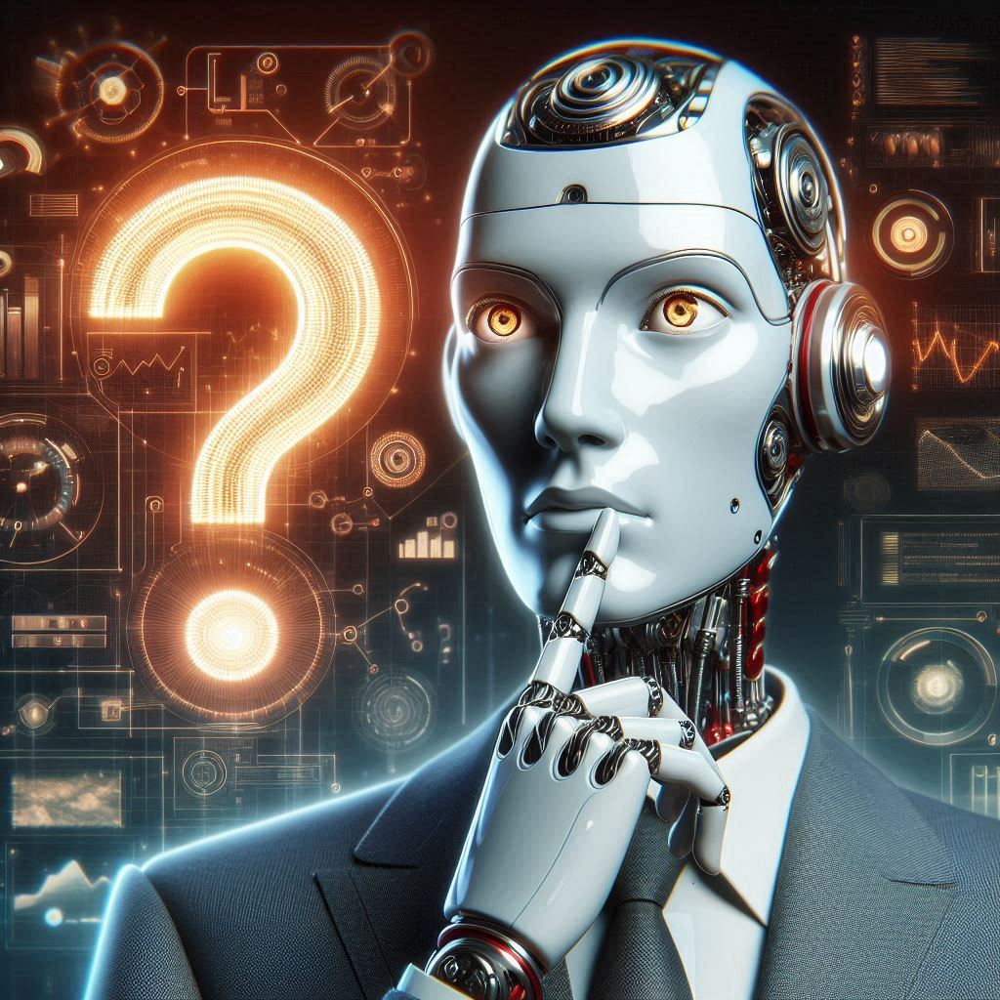
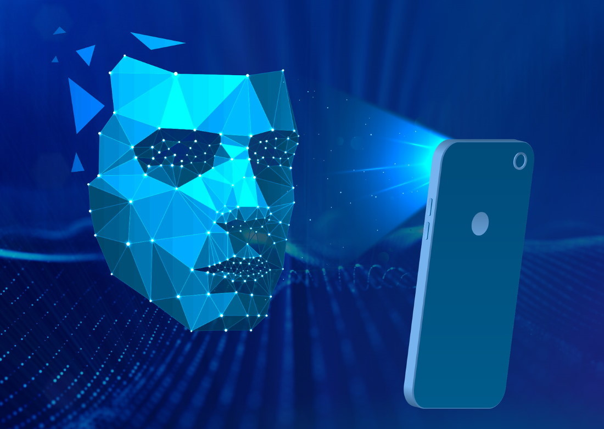
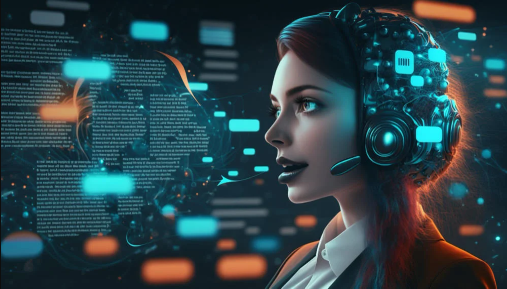
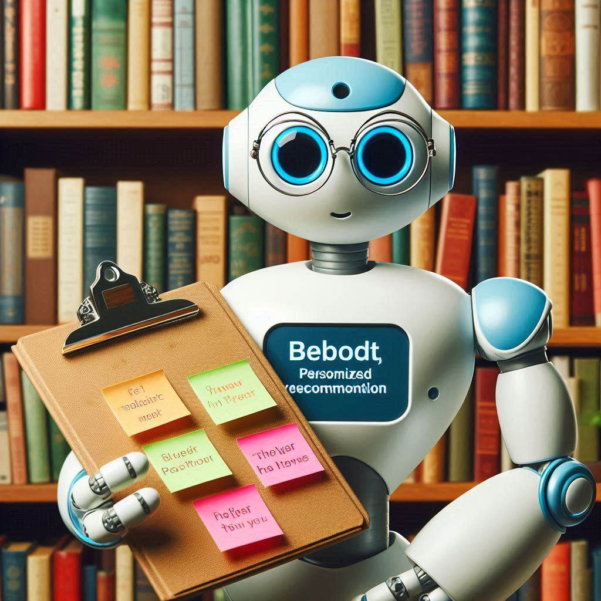
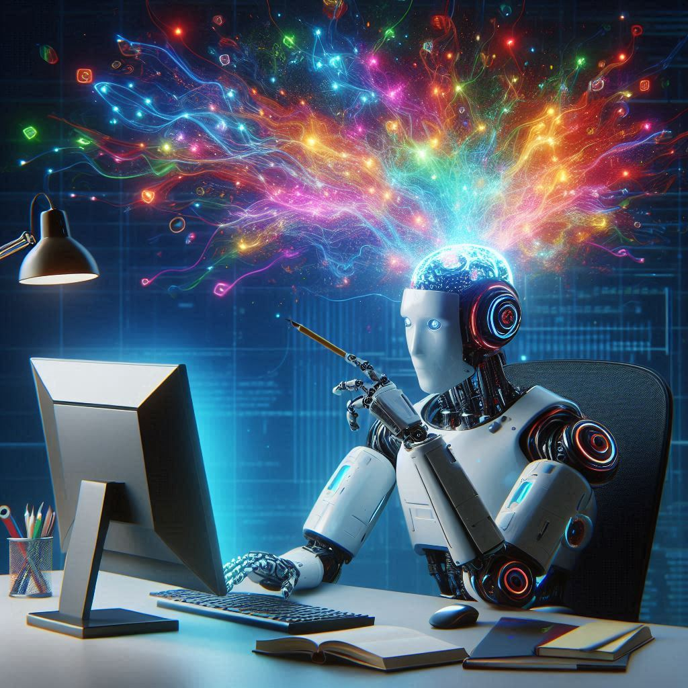
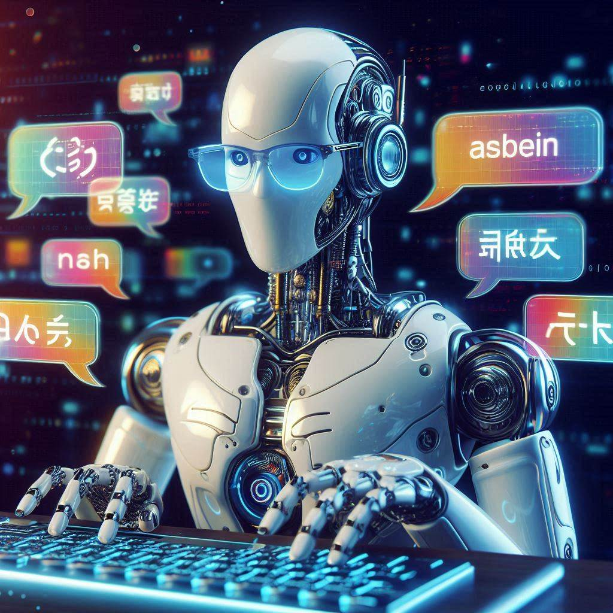
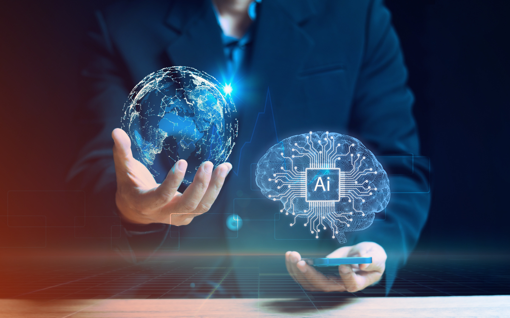

1. Definición y alcance
¿Crees que las máquinas podrían llegar a ser más inteligentes que los humanos? La Inteligencia Artificial está avanzando a pasos agigantados, y esta pregunta ya no parece tan descabellada y aquí te explicaremos a detalle todo lo que abarca la IA.
Contenido
Definición
¿Qué es la IA? La inteligencia artificial (IA) es la simulación de procesos de inteligencia
humana
por parte de máquinas, especialmente sistemas informáticos. Estos procesos incluyen el
aprendizaje,
el razonamiento y la autocorrección.
Si bien hemos establecido que la IA busca simular la inteligencia humana en máquinas, es crucial
entender que esta simulación abarca una amplia gama de capacidades cognitivas.
 Tipos de Inteligencia Artificial:
IA Estrecha o Débil (Narrow AI):
Es la IA más común y se enfoca en realizar tareas específicas.
Ejemplos: sistemas de recomendación de Netflix, asistentes virtuales como Siri, reconocimiento
facial en teléfonos inteligentes.
Tipos de Inteligencia Artificial:
IA Estrecha o Débil (Narrow AI):
Es la IA más común y se enfoca en realizar tareas específicas.
Ejemplos: sistemas de recomendación de Netflix, asistentes virtuales como Siri, reconocimiento
facial en teléfonos inteligentes.
IA General o Fuerte (General AI):
Hipotéticamente, una IA con la capacidad de comprender, aprender y aplicar el conocimiento en
cualquier tarea intelectual que un humano pueda realizar.
Aún no existe una IA general, pero es un objetivo ambicioso de la investigación en IA.
Componentes Clave de la IA:
La IA y el Aprendizaje:
 Aprendizaje supervisado: El modelo se entrena con datos etiquetados, aprendiendo a asociar
entradas con salidas específicas.
Aprendizaje no supervisado: El modelo encuentra patrones ocultos en datos no etiquetados, sin
una guía explícita.
Aprendizaje por refuerzo: El agente aprende a tomar decisiones en un entorno para maximizar una
recompensa.
Aprendizaje supervisado: El modelo se entrena con datos etiquetados, aprendiendo a asociar
entradas con salidas específicas.
Aprendizaje no supervisado: El modelo encuentra patrones ocultos en datos no etiquetados, sin
una guía explícita.
Aprendizaje por refuerzo: El agente aprende a tomar decisiones en un entorno para maximizar una
recompensa.
La IA ha dejado de ser una tecnología futurista para convertirse en una realidad presente en nuestras vidas cotidianas. Su alcance se extiende a una amplia gama de sectores, revolucionando la forma en que trabajamos, vivimos y nos relacionamos.
- Salud
- Diagnóstico: Análisis de imágenes médicas.
- Desarrollo de fármacos: Aceleración del proceso de descubrimiento.
- Atención personalizada: Planes de tratamiento personalizados.
- Finanzas
- Detección de fraudes.
- Asesoramiento financiero personalizado.
- Trading algorítmico.
- Educación
- Aprendizaje personalizado.
- Tutores virtuales.
- Evaluación automatizada.
- Transporte
- Vehículos autónomos.
- Optimización de rutas.
- Manufactura
- Robótica industrial.
- Mantenimiento predictivo.
- Servicio al cliente
- Chatbots.
- Análisis de sentimientos.
- Reconocimiento facial 
- Asistentes virtuales 
- Recomendaciones personalizadas 
- Generación de contenido 
- Traducción automática 
- Desarrollo de sofware y hardware capaz de correr IA más potente
- Privacidad
- Desempleo
- Ética
Alcance de la Inteligencia Artificial
Sectores Impactados
Ejemplos Concretos
Desafíos y Oportunidades
Si bien la IA ofrece un gran potencial, también plantea desafíos importantes:
A pesar de estos desafíos, la IA representa una oportunidad para mejorar la calidad de vida de las personas.
